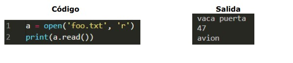
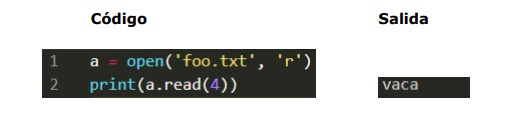
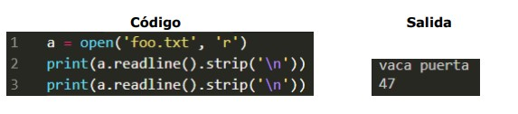

TEMARIO
INTRODUCCIÓN
PROGRAMACIÓN BÁSICA
CONTROLES DE FLUJO
ESTRUCTURAS DE DATOS
PROGRAMACIÓN ORIENTADA A OBJETOS
Lectura de archivos de texto
Con Python somos capaces de hacer programas que trabajen con
información contenida en un archivo, para eso primero debemos hacer que
nuestro programa lea tal información.
La función open() se encarga de la manipulación de archivos en python.
Normalmente usa dos argumentos, el primero será el nombre del archivo con el
que se quiere trabajar y su extensión (como un string) . De esta forma el
archivo debera estar en el mismo directorio que el del código fuente de nuestro
programa. Si el archivo con el que se quiere trabajar no está en el mismo
directorio que nuestro código fuente, podemos coloca como primer argumento la
ruta absoluta del archivo (como un string) .
Como segundo argumento se debe colocar el modo de acceso del archivo,
si quiere leer, colocamos entre comillas simples o dobles en minúsculas la letra r
(como un string). Si se quiere escribir en él debemos colocar como segundo
argumento una w (como un string).
Para manejar el archivo, se crea una variable y se iguala a la función open
con sus respectivos argumentos. Con esa variable durante todo el código nos
referiremos al archivo que que abrimos con la función open . Si queremos
añadir información en un archivo debemos abrirlo en modo de escritura si tan
solo queremos trabajar con la información que se encuentre en el archivo lo
abrimos en el modo escritura.
Imaginemos que queremos abrir un archivo foo.txt en modo lectura y que está
en el mismo directorio que nuestro código fuente.
Se hace lo siguiente:
La función read() se encarga de retornar todo el contenido de un archivo. por tanto si se coloca dentro de la función print() se estaría imprimiendo todo el contenido del archivo.
Dentro de los paréntesis de la función read podemos colocar un número entero que indica la cantidad de caracteres del archivo a retornar.
Se mandó a retornar solo 4 caracteres, por tanto se termina imprimiendo solo
los 4 primeros caracteres del archivo que corresponde a la palabra vaca.
Veamos la función readlines(), que retorna una lista de strings del archivo.
Hay que entender que cuando por ejemplo escribimos en un archivo de
texto, cada línea es un string, cuando se presiona enter para escribir en otra
línea, estamos es generado un salto de línea ( \n ) y luego el cursor se
posiciona en la siguiente línea. Entonces la primera línea del archivo foo.txt es
una cadena de caracteres que tiene como último carácter un \n implícito.
Ahora veamos la función readline() (no confundir con readlines() que termina en s) esta función retorna el string actual, es decir la línea actual del archivo, luego de usarla, el programa se sitúa en la siguiente línea, de modo que al volver usarla, la función retornara la siguiente línea del archivo.
Se utilizó tal función dos veces, y en cada ocasión se mandó a imprimir lo que retornaba eliminando el salto de línea de cada string (línea), por tanto en la salida se imprimieron las dos primeras líneas del archivo.